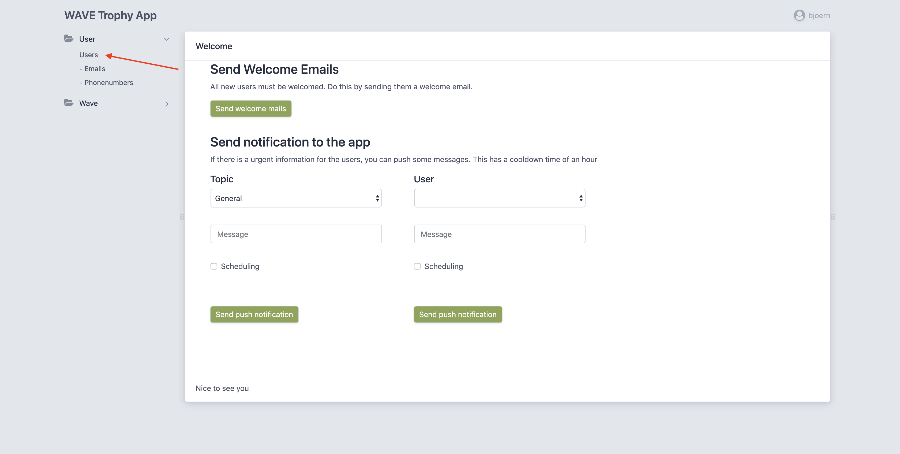
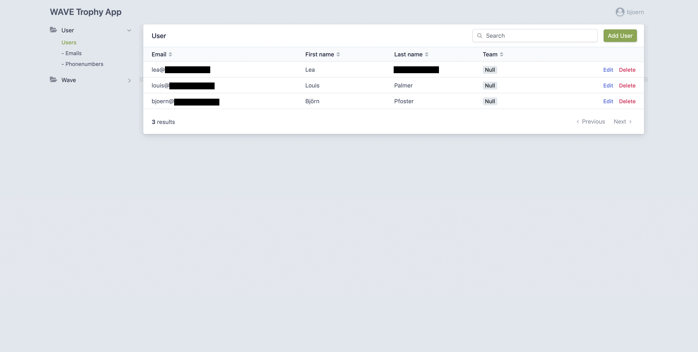
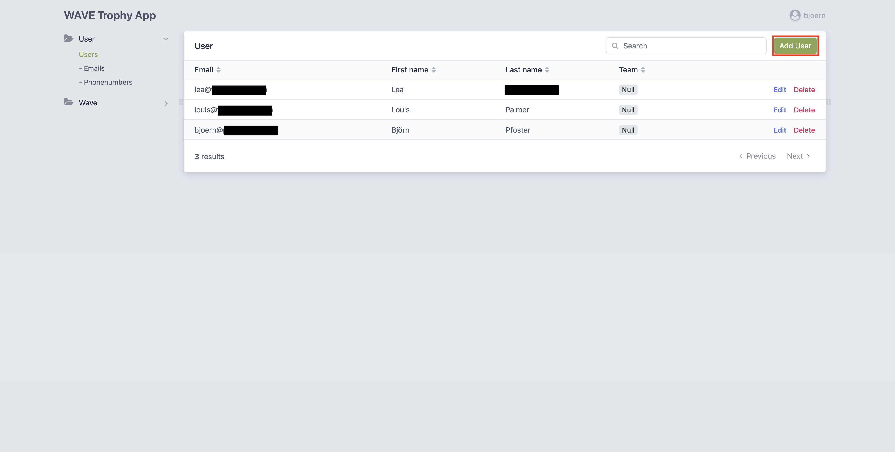
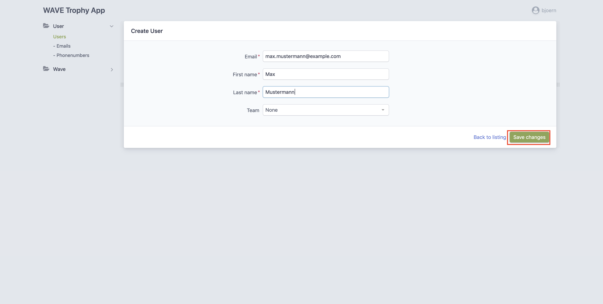

User
All users of the WAVETROPHY Application are managed via the admin interface. To access the user page, you have to be authenticated. After that you have to toggle the "Users" menu in the sidebar and select "Users"  After the navigation, you arrive at the user dashboard 
Create
To create a user, you have to select add User on the User dashboard 
On the form page, you have to fill in the corresponding values.

The email of the user. This is his primary email. This is also the where the invitation email is going to be sent to.
First Name
The first name of the user.
Last name
The last name of the user.
Team
The team of the user. This is a selection of all Teams. All teams must be created before they can be referenced here. This means, that you have to create one first, before you can add a team here.